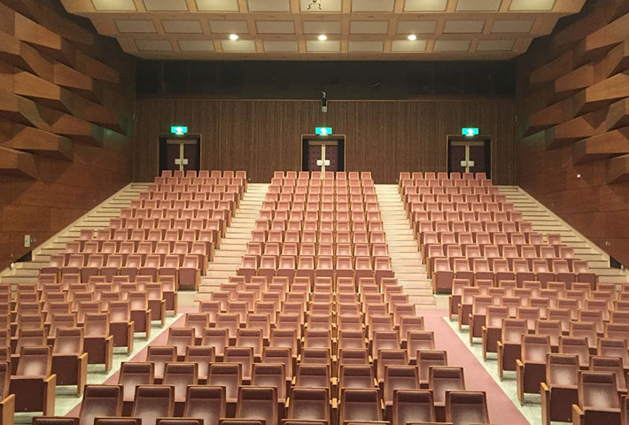

CONCERT コンサート情報
「山田貞夫音楽財団10周年記念コンサート」振替公演
開催概要・払い戻し・チケット販売のご案内
2022/9/19(月・祝)、台風の影響により公演の延期を発表させていただきました「山田貞夫音楽財団10周年記念コンサート」に関しまして、
振替公演日程と払い戻しのご案内をさせていただきます。
お手持ちのチケットは振替公演にそのまま有効となりますので、大切に保管いただきますようお願いいたします。
また、残念ながら振替公演にご来場が叶わないお客様に関しましては、チケットの払い戻しを実施させていただきます。
チケット払い戻し方法はプレイガイドごとに異なりますので、必ず最後までご一読くださいますよう、お願い申し上げます。
01 開催概要・チケット販売について
| 公演日 | 2023年1月30日（月） 開場：18時00分 /開演：18時45分 |
|---|---|
| 会場 | 愛知芸術劇場コンサートホール（ アクセスMAP ） |
| 出演 |
|
| プロブラム |
第1部
第2部
|
| チケット |
全席指定 2,000円※本公演は振替公演となります。 チケット再販について12/20(火)10:00〜各種プレイガイドにて販売いたします。
※一部招待席がございますのでご了承ください。 |
| お問合わせ | 山田貞夫音楽財団10周年事務局 |
| 主催 | FM AICHI |
02 払い戻しについて
振替公演にご都合が合わずご来場頂けない方にはチケットの払い戻しをさせて頂きます。
ご購入先によって払戻し方法が異なります。下記をご確認のうえ、ご購入されたプレイガイドで払い戻し手続きをお願いいたします。
払戻し期間は必ずお守りください。期日を過ぎますと、払戻しを致しかねますので予めご了承ください。
プレイガイドで購入された方
| 払戻期間 | 2022年10月31日（月）10：00〜 2022年11月20日（日）23：59 |
|---|---|
| 払戻方法 |
チケットぴあ／山田貞夫音楽財団10周年コンサート事務局（電話）にてご購入されたお客様払戻期間：2022年10月31日（月）〜2022年11月20日（日） チケットの引取方法などにより手続きが異なります。 詳細はこちら https://info-refund.pia.jp/nt6101p01 芸文プレイガイドにてご購入されたお客様払戻期間：2022年10月31日（月）〜2022年11月20日（日） 窓口にて直接払戻しをさせていただきます。お手持ちの未使用チケットをお持ちの上、お越しください。 ローソンチケットチケットにてご購入されたお客様払戻期間：2022年10月31日（月）〜2022年11月20日（日） お買い上げのローソン、ミニストップ店舗にて直接払い戻しをさせていただきます。 詳細はこちら https://l-tike.com/oc/lt/haraimodoshi/ イープラスにてご購入されたお客様払戻期間：2022年10月31日（月）〜2022年11月20日（日） 払戻方法は、チケットの受取方法や支払方法により異なります。 公演変更／延期 払戻方法確認チャート https://eplus.jp/sf/refund2 |
| お問合せ | 山田貞夫音楽財団10周年コンサート事務局 0570-08-6655（11:00～17:00） |
ダイドー社員より購入された方
| 払戻期間 | 2022年10月31日（月）10：00〜 2022年11月21日（月） |
|---|---|
| 払戻方法 |
「山田貞夫音楽財団10周年記念コンサートチケット払い戻し請求書」と、「チケット」を合わせてダイドー株式会社営業担当に渡していただくか、下記送り先にご郵送ください。 |
| 送り先 | 〒450-0003 |